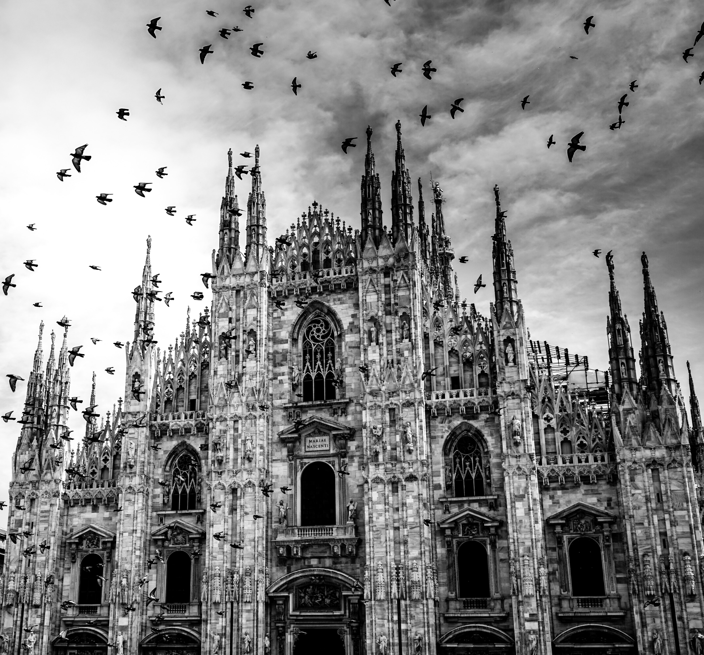
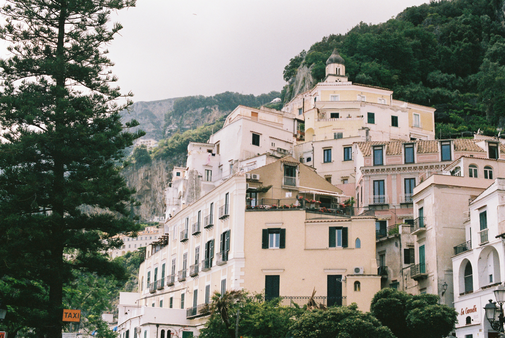

|
HOME | ABOUT | DESTINATION | CONTACT US |
|---|
 |
RomeMentioned in the world’s most iconic places, Rome is an epitome of beauty and history. Apart from being the capital city of Italy, the city also remains as a memorial to the creative imagination of architecture. Due to the 3000 year old ad hoc urban development, the historic centre of Rome is listed as a World Heritage Site by UNESCO. Situated on the central portion of the Italian peninsula, on the Tiber River about 24 km from the Tyrrhenian Sea. Rome is made up of warm colours and historic architectural styles. 👈️CLICK THE IMAGE FOR MORE DETAILS |
|---|---|
VeniceVenice is a peaceful and attractive tourist destination that is located on a group of 118 small islands. These islands are linked by beautiful bridges and separated by the many canals running through the city. Venice is also informally known as the “floating city” or the “city of canals” and is highly popular among tourists for its historic buildings, structures and places of ancient significance. The uniqueness of Venice and its lagoons have also brought it up on the UNESCO list of world heritage sites. CLICK THE IMAGE FOR MORE DETAILS👉️ |
 |
 |
FlorenceFlorence is a vibrant city that has something for everyone, from culture to history to fine food and good times. Located in central Italy, it is touted to be one of the most populous and wealthiest cities in the world. It is the birthplace of the Renaissance era and a treasure trove of artistic masterpieces. Florence is surrounded by rolling hills from all sides and is dotted with vineyards, orchids, and lush green villas. Due to the architectural heritage and artistic diversity Florence has been entitled as the most beautiful city in the entire world. 👈️CLICK THE IMAGE FOR MORE DETAILS |
MilanMilan, Italian Milano, is a beautiful city and capital of Lombardy, northern Italy. The city has become the leading financial, manufacturing, and commercial centre of Italy with its deep roots in history. Milan resides in the heart of the Po Basin of northern Italy, enveloped amidst the plan spreading between the Ticino and Adda rivers. Milan’s beauty showcases different periods of historical crisis, architectural and organic structure development. These periods largely include the beauty of the cathedrals, four-gated city of Mediolanum, and intricately constructed neighbourhoods. CLICK THE IMAGE FOR MORE DETAILS👉️ |
 |
|  | SorrentoLocated in South Italy on the Amalfi Coast overlooking the Bay of Naples, is this town bestowed with unbelievable beauty and charm. Home to some of the oldest ethnic tribes and later to the Romans, this ancient place has also seen the rule of several empires ranging from the Ostrogoths, Guaimars, Ottomans, etc. one can still see their imprints on the architecture and food, making it one of the must-visit places to go in Italy. 👈️CLICK THE IMAGE FOR MORE DETAILS |